刻度 使用說明書
刻度是鴻綸科技的互動式評量網站：老師選好年級、科目、範圍，AI 幾秒鐘出好一份附答案的考卷，可以下載列印，也能直接發給學生線上作答、自動判分，老師和家長即時看到作答進度。
網址：luno.hunglun.com。用電腦、平板、手機的瀏覽器打開就能用，不用安裝。這份說明書可以按右上角「列印／存成 PDF」印出來。
1認識刻度
| 身分 | 可以做什麼 | 要不要帳號 |
|---|---|---|
| 老師 | AI 出題、下載 Word／PDF、把現成的紙本卷拍照變成線上測驗、發測驗、看全班即時進度 | 出題、下載不用；發送測驗要登入 |
| 學生 | 輸入老師給的 6 位數代碼或點連結作答、自己練習、看分數與解析 | 點老師傳來的連結作答不用登入；從首頁選「我是學生」要先登入（沒有帳號可以註冊） |
| 家長 | 看孩子的作答進度、看題目答案與解析 | 不用；登入可以一次管多個孩子 |
| 管理員 | 管理全站帳號 | 要，帳號由既有管理員建立 |
2開始使用
歡迎頁
歡迎頁
打開網站會先看到「刻度」歡迎頁，它會停在那裡，按「進入」才往下。使用說明就在歡迎頁下方，或按右上角「使用說明」直接捲到。右上角的月亮／太陽鈕可以切換深色與淺色，沒切過的話會跟著手機或電腦的設定走。
選身分
按「進入」後，最上面是「訪客模式」，下面是「我是教師」「我是家長」「我是學生」三列。右邊的刻度尺說明差別：訪客一份最多 20 題；教師登入後題數不限。管理員請點下方小字「管理員登入」。
- 訪客模式：不用登入，一支手機出題兼作答，一份最多 20 題，詳見訪客模式。
- 我是教師：要先登入教師帳號（沒有帳號可以在登入畫面註冊），出題不限題數，還能發測驗、看全班即時進度。
- 下次再來：這頁最上面會出現「繼續當訪客 →」（或教師、學生），按一下直接進去。
- 換身分：進去之後，畫面最上方的「換身分」可以隨時回到這一頁；身分頁的「回歡迎頁」可以回到最前面。
- 學生、家長點老師傳來的連結進來時，不會經過歡迎頁和選身分，直接打開那份測驗或進度。
訪客模式
只有一支手機、不想登入時用：按「訪客模式」，依序選年級、科目，題數只能選 5、10、15、20 題。出好題後，工具列最顯眼的就是「交給學生作答」，照下面第 5 章的做法設密碼、把手機遞給學生。訪客看不到「發送測驗」，那個要登入教師帳號才有。
3老師：出一份考卷
登入教師帳號（或用訪客）後，出題分成四步，每一頁只做一件事。上方的圓點是進度，左下角「上一步」可以回去改，選過的內容都會留著。
第 1 步：要怎麼出題
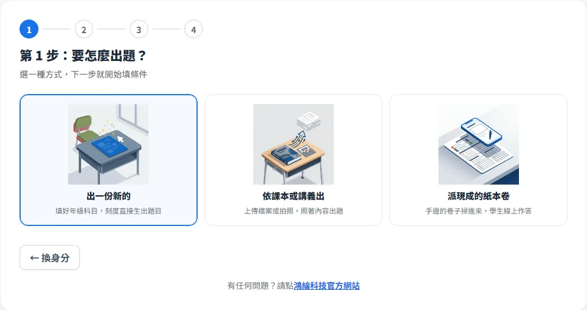
- 使用 AI 出題：出一份新的，照你選的年級、科目、範圍，由 AI 依課綱出題。
- 依課本或講義出：上傳 Word 檔、圖片（可以用手機拍課本）、PDF，或直接貼文字，AI 照這些內容出題。
- 派現成的紙本卷：不出新題目，把手邊的卷子掃進來給學生線上作答，見第 6 章。
第 2 步：選年級和科目
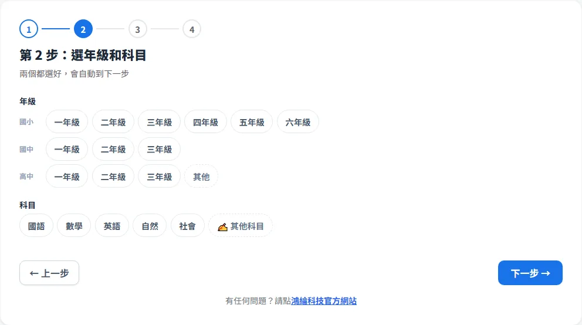
這兩項一定要自己選（選錯整份考卷就不能用，所以不給預設值）。清單裡沒有的，點「其他」或「其他科目」自己打字。選「依課本或講義出」時，這一步會換成上傳檔案。
第 3 步：版本和範圍
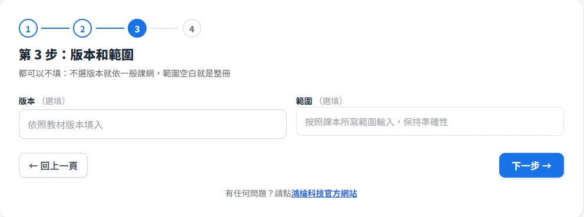
- 版本：自己填寫，請依照所使用的教材版本，避免版權問題；空白就是依一般課綱出題。
- 範圍：按照課本所寫的範圍輸入，才能保持準確，例如「第一課到第三課」。空白就是整冊。
第 4 步：題數、題型、難度
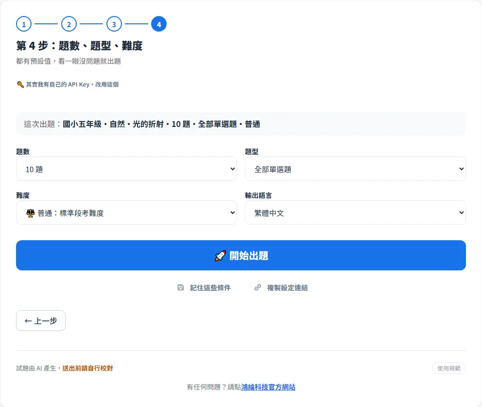
| 項目 | 選項 |
|---|---|
| 題數 | 5、10、20、25、50、100 題，或自訂 |
| 題型 | 全部單選、全部複選、單選複選各半（照題數對分）、全部填充、全部簡答（計算題），或自訂 |
| 難度 | 基礎（課本原文、觀念複習）、普通（標準段考難度）、進階（跨概念、需要推理）、挑戰（多步驟思考、情境轉換）；不管哪一級，都不會超出該年級的課綱 |
| 輸出語言 | 繁體中文、英文 |
按下出題後等十幾秒；題數多會分批出，時間會長一點。
省時間的捷徑
- 記住這些條件：第 4 步下方按一下，存在這台裝置。下次進來第 1 步會多一個「用上次的條件直接出題」，一鍵出題。
- 複製設定連結：把整組條件做成連結傳給同事，對方打開會直接到第 4 步，條件都帶好。
每次出題間隔 30 秒
使用刻度內建的 AI 額度時，同一台裝置每次出題要隔 30 秒。若你有自己的 Google API Key，在第 4 步點「其實我有自己的 API Key，改用這個」貼上，就不受這個限制，用量算在你自己的額度上（Key 可以在 Google AI Studio 免費申請）。
4老師：出完題之後
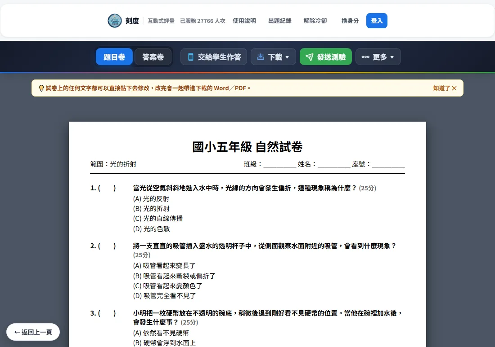
線上作答、題目卷與答案卷
出好題之後，畫面預設是線上作答：手機和電腦都能直接寫，這也是學生從連結進來看到的樣子。要看 A4 版面，按工具列最右邊「更多」，選「看 A4 題目卷」或「看答案卷與解析」；進去之後上方會出現「題目卷」「答案卷」分頁，按「線上作答」就回來。
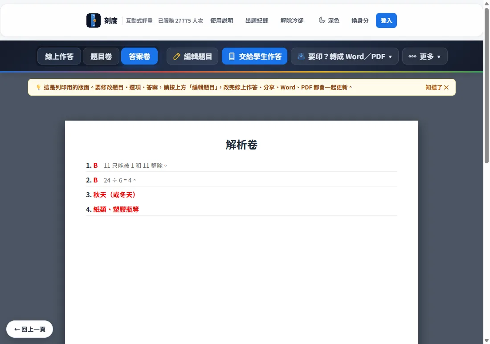
編輯題目
按工具列的「編輯題目」，可以改試卷標題，以及每一題的題目、選項、答案、解析、配分，也能調整順序、刪除或新增一題。按「儲存」後，線上作答、題目卷、答案卷、Word、PDF，還有你發給學生的連結，都會一起更新。（以前直接點試卷文字修改的做法已經取消，因為那樣改的字不會進線上作答與分享。）
只換掉某一題
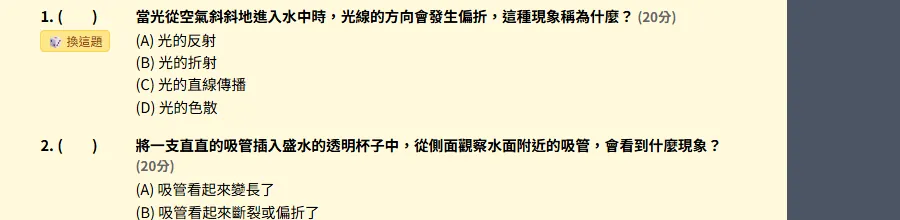
某一題不滿意，先從「更多」進 A4 題目卷，按題號下方的「換這題」，只有這一題重出，其他題目和你改過的字都不會動。換題一樣有 30 秒間隔。要整份重來，在「更多」裡選「重新出整份」（會清掉目前題目）。
要印？轉成 Word／PDF
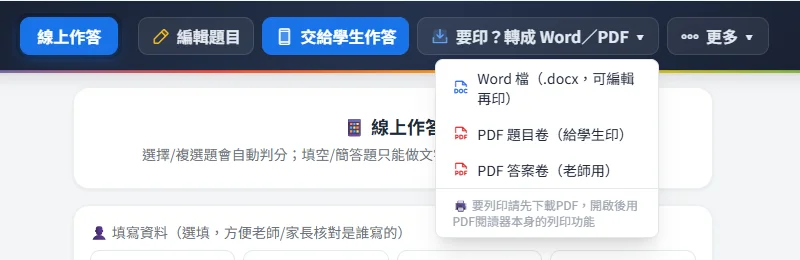
- Word（.docx）：可以再用 Word 或 Google 文件編輯。
- PDF：分「題目卷」和「答案卷」兩種，適合直接列印或傳給別人。在線上作答畫面直接按「要印？轉成 Word／PDF」就能下載，不用先切到 A4 畫面。
- 用 Chrome 時，可能會跳出視窗問你要存在哪裡，選好位置按「儲存」即可。
出題紀錄
畫面最上方「出題紀錄」保留這台裝置最近 20 次出過的考卷，可以重新打開。換電腦或清除瀏覽器資料就看不到了；要長期保存請下載，或登入老師帳號存進班級歷史（見第 7 章）。
5老師：讓學生作答
發送測驗
工具列按綠色「發送測驗」，一次產生四種發法：
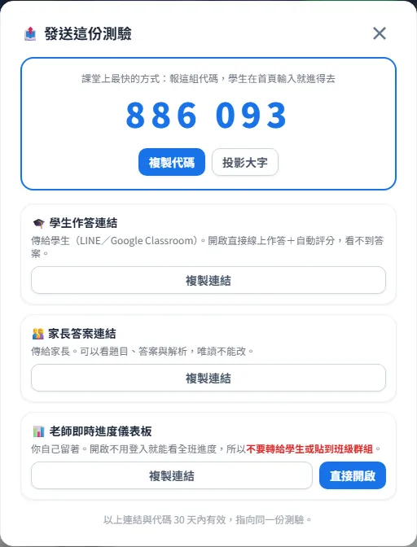
| 發法 | 給誰 | 怎麼用 |
|---|---|---|
| 6 位數代碼 | 課堂上的學生 | 按「投影大字」放到螢幕上，學生在學生首頁輸入代碼就進得去。最快。 |
| 學生作答連結 | 學生 | 貼到 LINE 群組或 Google Classroom。學生打開直接作答、自動判分，看不到答案。 |
| 家長答案連結 | 家長 | 可以看題目、答案和解析，只能看不能改。 |
| 老師即時進度儀表板 | 老師自己 | 不用登入就看得到全班進度，所以不要轉給學生或貼到班級群組。 |
代碼和連結都是 30 天內有效。
看全班即時進度
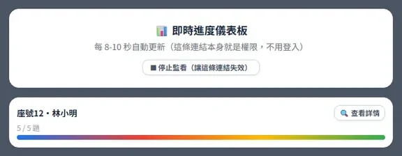
- 每 8 到 10 秒自動更新，看得到每位學生寫到第幾題。
- 按學生卡片的「查看詳情」，可以看他每一題實際選了什麼、寫了什麼。
- 「停止監看」會讓這條儀表板連結失效，學生不能自己關掉被監看。
- 作答進度保留 8 小時，課堂上很夠用。
交給學生作答（同一支手機，不用登入，訪客也能用）
家長或教師在手機出好題目後，按工具列「交給學生作答」，設一組 4 位數字密碼就能把手機直接遞給學生。學生交卷後只會看到「已交卷」，分數、對錯、正確答案與解析都先收起來。
- 一支手機要輪流給幾位學生寫：學生交卷後按「換下一位同學寫」，不用密碼，作答會清空、成績先暫存。
- 學生寫完交還：按頂端細條的「家長／教師」，或按成績卡上的「查看詳解」，輸入密碼後會顯示全部學生的成績名單與每題解析。
- 解鎖後想讓學生再練一次：按「只重做錯題」，只會出現答錯的題目，沿用同一組密碼；寫完同樣要密碼才看得到結果，之後可按「還原成完整題目」。
- 忘記密碼：解鎖時留空直接按確定，改答一題算式（例如 47 × 8）就能解鎖，答案不會直接公開。
- 密碼與成績只存在這個畫面裡，重新整理或關掉頁面就會消失。
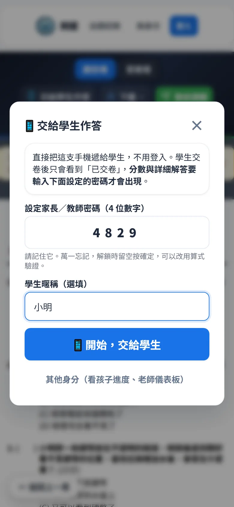
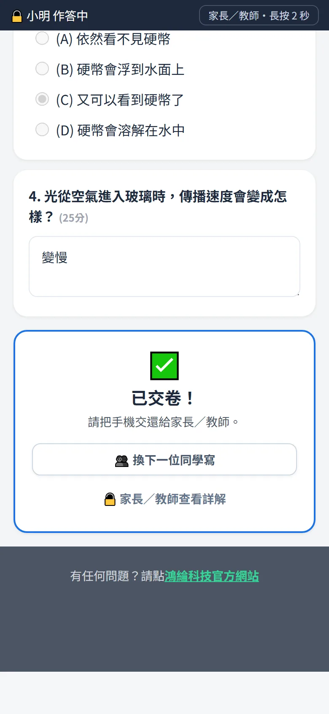
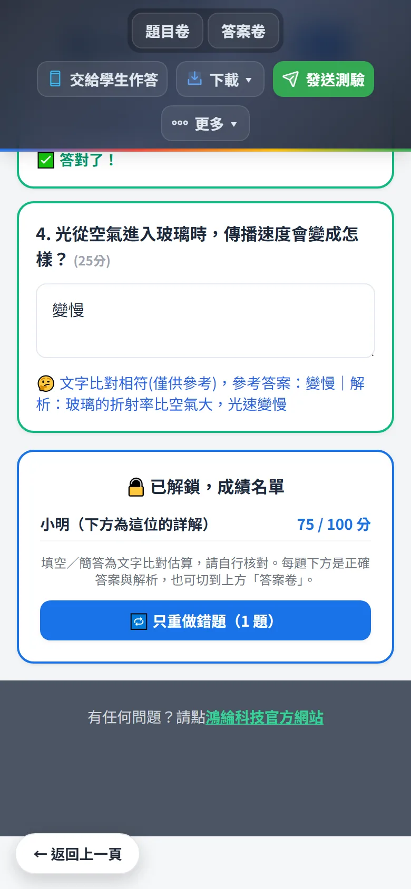
自己先試寫一次
用「交給學生作答」自己當學生寫一遍，確認題目沒問題再發；寫完輸入密碼就能看解析。
6老師：派現成的紙本卷
手邊已經有出好的卷子（段考卷、講義、習作），不用重打。第 1 步選「派現成的紙本卷」，把卷子拍照或丟 PDF 上傳，AI 會把題目照抄成整齊的數位題目，你核對過後就變成跟 AI 出題一樣的手機線上測驗。這個功能要先登入教師帳號。
- 上傳題目卷：拍照、選照片或直接丟 PDF，一頁一張，最多 12 頁。拍的時候光線要均勻、整張入鏡、不要歪斜或反光。
- 上傳答案卷（建議）：有答案卷的話，AI 會以它為準，把每題答案與解析填進去，批改最準；沒有的話，AI 會自己解題，每個答案都會標「答案是 AI 自己解的」，要請你核對。
- 按「開始辨識」：每批約 10 到 40 秒。中途失敗可以按「從中斷的地方繼續」，已完成的部分不會白做。
- 核對辨識結果：逐題對照原卷，AI 不確定的題目會標紅字（字跡或注音看不清楚、答案缺漏、題目有圖形等），可以點縮圖放大看原圖，直接修改題目、選項、答案。勾選「我已逐題對照原卷檢查過」才能產生測驗。
- 發給學生：跟 AI 出題一樣，預設就是手機線上作答；要列印的 A4 題目卷、答案卷、PDF、Word，按工具列的「要印？轉成 Word／PDF」，選 Word 檔或 PDF 題目卷、答案卷下載。
7老師帳號與班級
- 註冊：在登入畫面按「還沒有帳號？點此註冊」。老師註冊時要幫班級取名字（例如「六年1班」），全站不能重複，這個名字就是學生加入班級用的班級代碼。
- 帳號與密碼規則：帳號和密碼都最多 16 個字，只能用英文、數字和符號（不能用中文、不能有空白），而且不分大小寫，打「ABC」和「abc」是同一個。密碼至少 6 碼。
- 登入後多的功能：發送測驗；出題後在「更多」裡「存入班級歷史」，全班共用，最多 50 份，超過會自動刪最舊的；即時進度可以看每位學生的作答詳情。
- 登入狀態保留 30 天，之後要重新登入。
- 目前沒有自助重設密碼。忘記密碼請聯絡我們（第 12 章）。
8學生
進入學生首頁
選「我是學生」要先登入；還沒有帳號就按「還沒有帳號？點此註冊」，註冊時要先閱讀並勾選《個人資料蒐集告知》。老師的班級名稱可以選填，之後也能補。
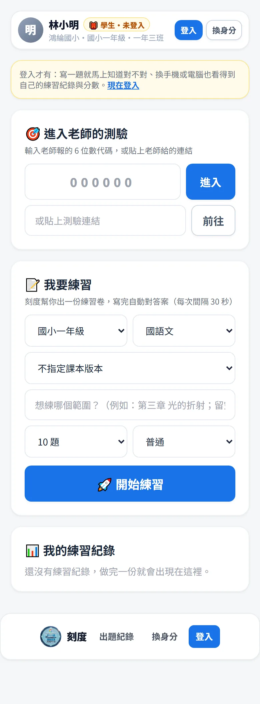
寫老師的測驗
- 在「進入老師的測驗」輸入老師報的 6 位數代碼按「進入」；或把老師給的連結貼上按「前往」，也可以直接點老師傳來的連結。
- 開始前可以填年級、班級、座號、姓名（選填，方便老師和家長核對是誰寫的）。
- 選作答方式：「全部寫完再送出」，或「每題即時看結果」（要登入才能用）。即時模式每題要按「確認這題」才算數，避免誤按。
- 寫完按「送出評分」，馬上看到分數，每一題標出答對或答錯、正確答案和解析。
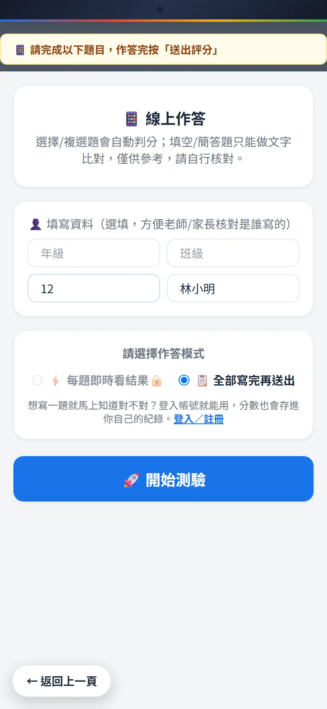
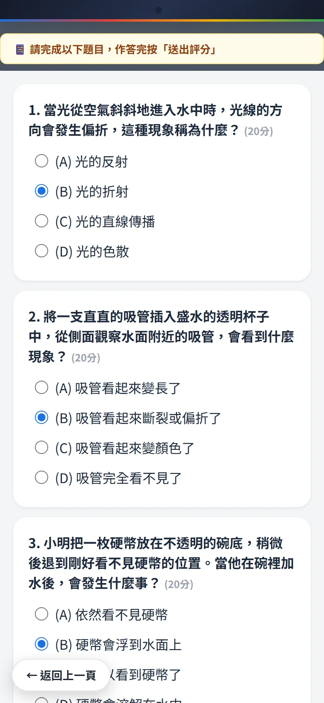
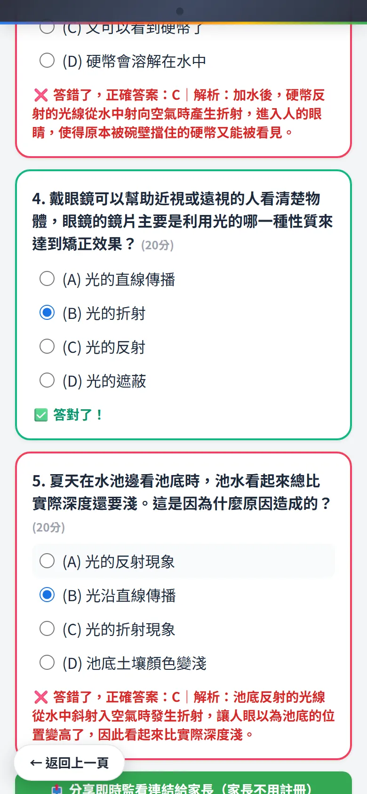
送出後可以按「分享結果給家長／老師」產生結果連結（30 天有效），或「分享即時監看連結給家長」。
自己練習
學生首頁的「我要練習」：選年級、科目、課本版本（康軒、翰林、南一、部編，或不指定）、想練的範圍、題數（5 到 20 題）和難度，按「開始練習」，刻度出一份練習卷，寫完自動對答案。每次練習一樣間隔 30 秒，下方「我的練習紀錄」看得到以前的分數。
要不要登入
不登入也能寫測驗和練習。登入才有：每題即時看結果、換手機或電腦也看得到自己的練習紀錄和分數。
9家長
- 看題目和答案：打開老師給的「家長答案連結」，可以看題目、答案與解析。
- 看孩子寫到哪：孩子作答後按「分享即時監看連結給家長」傳給你，打開就看得到進度；孩子寫完也可以傳「結果連結」給你看分數和每題對錯。
- 家長帳號：在選身分頁點「我是家長」登入或註冊，登入後在「我的帳號」輸入孩子的帳號名稱連結。連結後不用等孩子傳連結，就能直接查他的即時進度和作答詳情，一次可以管好幾個孩子。
10管理員
管理員帳號不開放自己註冊，由既有管理員建立。從選身分頁的「管理員登入」進入，畫面右上角會出現「管理後台」，可以：
- 查看、搜尋全站帳號
- 手動建立帳號
- 修改角色、重設密碼
- 刪除帳號：刪除老師會一併刪除他的班級與班級出題歷史，請先確認
11常見問題
為什麼要等 30 秒才能再出題？
刻度內建的 AI 額度是大家共用的，同一台裝置每次出題要間隔 30 秒，避免額度被少數人用光。有自己的 Google API Key 就不受限制（見第 3 章）。
AI 出的題目有錯怎麼辦？
按「編輯題目」直接改掉，或在更多選單進 A4 題目卷，按該題的「換這題」。發給學生前請一定先看過；AI 偶爾會出現事實錯誤或超出年級的內容。
填充題學生寫對了卻被判錯？
填充和簡答是逐字比對，同義的不同寫法可能被判錯。請以老師核對為準；選擇題的判分不受影響。
連結打不開了？
分享連結、6 位數代碼、結果連結都是 30 天內有效，即時進度保留 8 小時。過期請老師重新按一次「發送測驗」。
忘記密碼怎麼辦？
目前沒有自助重設密碼，請聯絡我們，由管理員幫你重設。
換電腦後出題紀錄不見了？
出題紀錄和「記住這些條件」只存在原本那台裝置的瀏覽器。要跨裝置保留，請下載 Word／PDF，或登入老師帳號存進班級歷史。
手機、平板可以用嗎？
可以。出題、作答、看進度都支援手機和平板；出題建議用電腦，下載和改字比較方便。
不想每次都看歡迎畫面？
按右下角「略過」即可；同一個分頁重新整理不會再播。
12聯絡我們
- 作者信箱：gfeh@hunglun.com
- 作者 LINE：加入好友（電腦版請在 LINE 搜尋 ID：safezone0619）
- 鴻綸科技官方網站：hunglun.com
© 鴻綸科技 刻度 互動式評量 個人資料蒐集告知